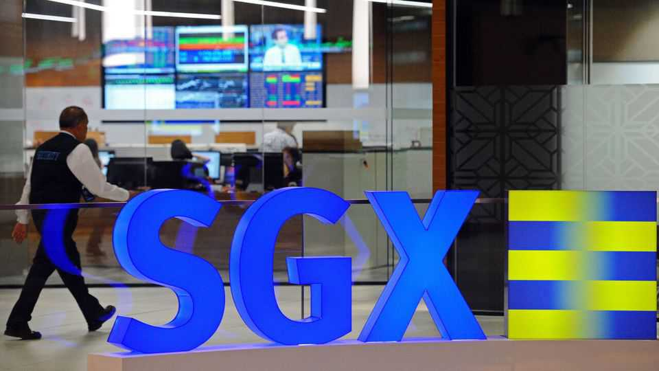
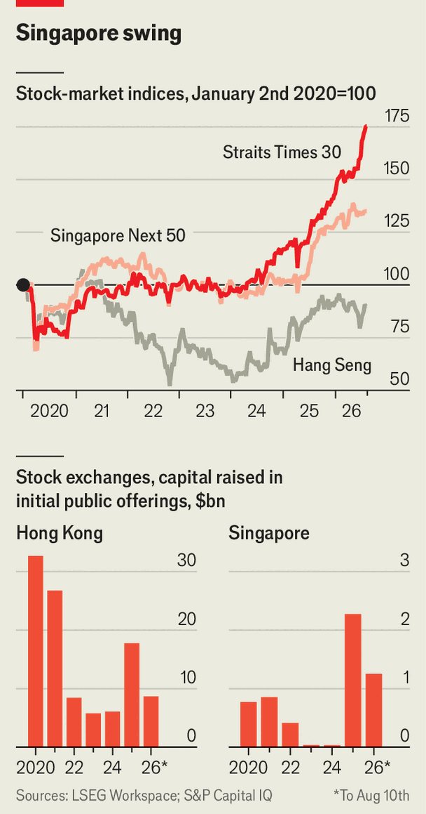

Can Singapore ever build a proper stock market?
The city-state wants to fill a hole in its financial portfolio

Aug 13th 2026
SINGAPORE’S FINANCIAL chops are formidable. It trails only Hong Kong and Switzerland as a bolthole for plutocrats’ cross-border assets. It is the third-largest venue for foreign-exchange trades, behind America and Britain, a big one for physical commodities such as oil, a centre of trade and marine finance, and a hub for specialty insurance. What it lacks is a big bourse.
For years low valuations and lower liquidity have led more firms to delist from the Singapore Exchange (SGX) than to list there. Local successes, such as Sea Group, a games-to-groceries digital giant worth $80bn, often choose New York over home. For all the talk of Singapore as a gateway to South-East Asian stocks, SGX has welcomed just 70 or so companies from its region; as many as 40 others preferred distant Hong Kong. Between 2021 and 2023 the benchmark Straits Times index of Singapore’s 30 biggest firms (shortened, infelicitously, to STI) barely budged.
Lately, however, the sleepy SGX has stirred. Since the start of 2024 the STI is up by around 75%, compared with 50% for Hong Kong’s Hang Seng index (see chart). The Next 50 index, which comprises what the name suggests, has risen by a third over the past year or so, handily beating the Hang Seng. Earnings are up, especially at Singapore’s impressive banks, but so is the ratio of share prices to forecast profits, suggesting investors have marked up Singapore Inc. Last year companies raised $2bn in initial public offerings (IPOs), a fraction of Hong Kong’s tally but the most since 2019. This year is on track to “substantially exceed” the last, with $1.1bn already raised so far, says Clifford Lee of DBS, a Singaporean bank.

The revival owes much to the Monetary Authority of Singapore (MAS), the central bank. Even as places like South Korea and Japan have wielded sticks to reform their stock markets, such as tougher listing standards, Singapore has been all carrot. Entrants to the SGX get corporate-tax rebates and a joint-listing “bridge” with the Nasdaq, New York’s tech-heavy bourse. Listing requirements, on pre-IPO profits, disclosures and so on, have been loosened. Finger-wagging, such as a “watch list” of poorly performing firms, has been cut back. Brokers, whose research investors use to make choices, get a government grant of up to S$6,000 ($4,690) every time they pen a report about SGX stocks. The monthly volume of research has more than tripled since July 2025, according to the MAS.
The sweetest taproot is the Equity Market Development Programme (EQDP), a S$6.5bn pot of cash on offer to asset managers who can match a state dollar in Singapore stocks with a dollar or more of outside capital. So far the EQDP has handed S$4bn to nine investment firms. Greater demand could lead to peppier valuations, in turn making Singapore a more attractive place to list. The idea is to create “a flywheel”, says Leong Sing Chiong of the MAS, “not to distort the market”.
To qualify for EQDP cash, investment firms are launching Singapore-focused funds. Pineapples, a good omen when rolled into a new home, according to local lore, feature heavily in the marketing materials for a new fund by JPMorgan Chase, an American bank, which promises that investors will be “rolling in income opportunities”. Fullerton Fund Management, a firm controlled by Temasek, a Singaporean sovereign-wealth fund, boasts that assets in its new EQDP fund aimed at retail investors have swelled from around S$300m to S$1bn since launching in October.
Since the EQDP’s start in 2025 average daily trading volume in the STI is up by more than half. More firms are seeking IPOs; around 50 are thought to be queueing up. Later this year AirTrunk, a data-centre operator backed by Blackstone, a private-markets giant, hopes to raise $1.5bn by listing a real-estate investment trust (REIT) in Singapore. “This must be one of the best pipelines I’ve seen in my career,” says Carmen Lee of OCBC, another local bank.
The government is not done yet. In February it announced that in 2028 the Central Provident Fund (CPF), Singapore’s $500bn mandatory pension scheme, would introduce voluntary “life-cycle” products that automatically rebalance from stocks to bonds over time. Most CPF savings currently sit in government bonds. If life-cycle products steer them towards local stocks, as happens with Australia’s vast superannuation funds, it would transform the market. The flows into Singapore equities could reach S$6bn annually, equivalent to an EQDP a year, estimates Jayden Vantarakis of Macquarie, an Australian bank.
Not everything is going Singapore’s way. Last year’s biggest listing, a data-centre REIT backed by NTT, a Japanese telecoms titan, flopped. Its shares are trading at 7% below the offer price. Just two of nine listings this year trade above their debut Later this year DayOne, a Singapore-based data-centre operator with most of its capacity in next-door Malaysia, plans to raise $5bn in an American flotation.
A persistent gap between Singapore’s promises and performance regarding IPOs dents confidence, says a veteran banker. The city-state’s canny bureaucrats cannot fix this with cash alone. But it’s a start.■